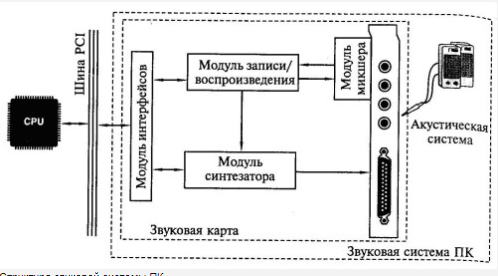

Обработка и воспроизведение звука
Звуковая система ПК
Звуковая система ПК в виде звуковой карты появилась в 1989 г., существенно
расширив возможности ПК как технического средства информатизации.
Квантовые компьютеры и квантовые вычисления — новый
Звуковая система ПК — комплекс программно-аппаратных средств, выполняющих
следующие функции:
- запись звуковых сигналов, поступающих от внешних источников, например,
микрофона или магнитофона,
путем преобразования входных аналоговых звуковых сигналов в цифровые и
последующего сохранения на
жестком диске;
- воспроизведение записанных звуковых данных с помощью внешней
акустической системы или
головных телефонов (наушников);
- воспроизведение звуковых компакт-дисков;
- микширование (смешивание) при записи или воспроизведении сигналов от
нескольких источников;
- одновременная запись и воспроизведение звуковых сигналов
(режим Full Duplex);
- обработка звуковых сигналов: редактирование, объединение или разделение
фрагментов сигнала,
фильтрация, изменение его уровня;
- обработка звукового сигнала в соответствии с алгоритмами объемного
(трехмерного — 3D-Sound)
звучания;
- генерирование с помощью синтезатора звучания музыкальных Инструментов,
а также человеческой
речи и других звуков;
- управление работой внешних электронных музыкальных инструментов через
специальный интерфейс
MIDI.
Звуковая система ПК конструктивно представляет собой звуковые карты,
либо устанавливаемые в слот материнской платы, либо интегрированные на
материнскую плату или карту расширения другой подсистемы ПК. Отдельные
функциональные модули звуковой системы могут выполняться в виде
дочерних плат, устанавливаемых в соответствующие разъемы звуковой карты.
Классическая звуковая система, как показано , содержит:

- модуль записи и воспроизведения звука:
- модуль синтезатора;
- модуль интерфейсов;
- модуль микшера;
- акустическую систему.
Первые четыре модуля, как правило, устанавливаются на звуковой карте. Причем
существуют звуковые карты без модуля синтезатора или модуля записи
воспроизведения цифрового звука. Каждый из модулей может быть выполнен либо
в виде отдельной микросхемы, либо входить в состав многофункциональной
микросхемы. Таким образом, Chipset звуковой системы может содержать как
несколько, так и одну микросхему.
Конструктивные исполнения звуковой системы ПК претерпевают существенные
изменения; встречаются материнские платы с установленным на них
Chipset для обработки звука.
Однако назначение и функции модулей современной звуковой системы
(независимо от ее конструктивного исполнения) не меняются.
При рассмотрении функциональных модулей звуковой карты принято пользоваться
терминами «звуковая система ПК» или «звуковая
карта»
безусловно тоже в списке направлений для исследований, но каких-то
болееменее значимых результатов в настоящее время вроде как еще нет.
Порог слышимости и «болевой порог»
Величина звукового давления, которая едва заметна на слух при отсутствии всяких
других мешающих шумов и звуков, называется пороговой величиной звукового
давления, или — порогом слышимости.
Наверх
Далее